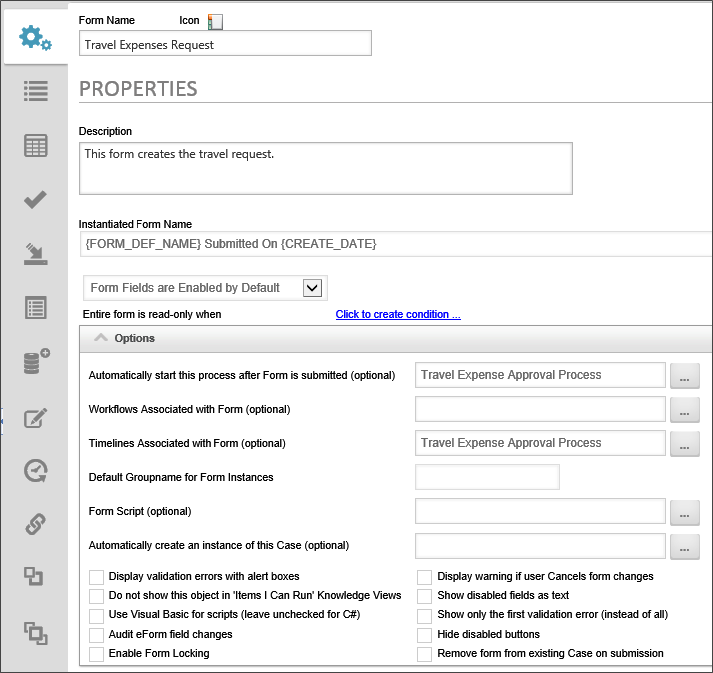
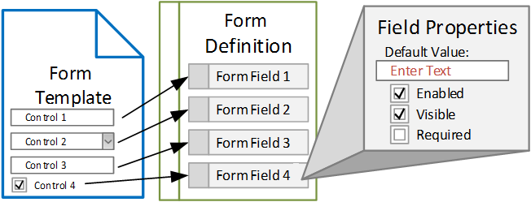
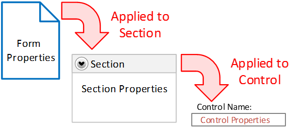
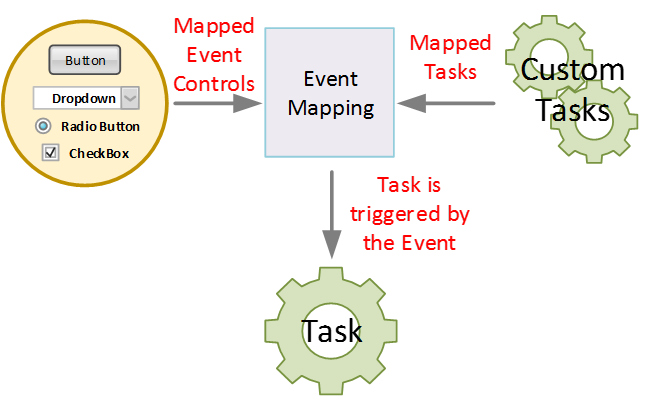
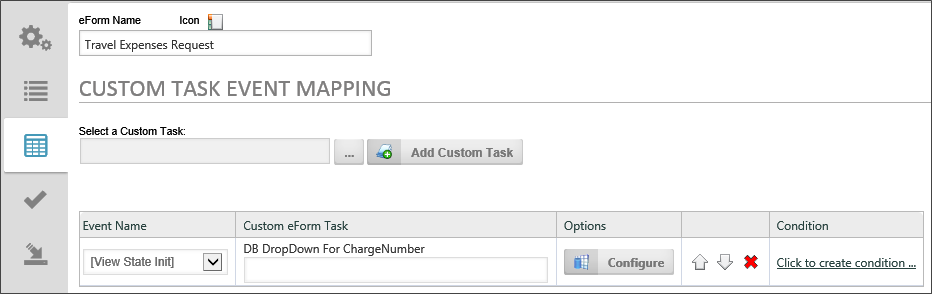
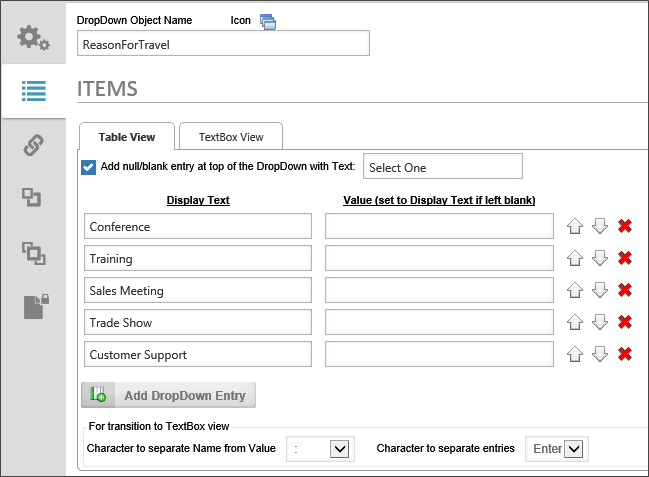

In addition to the Online Form Designer we discussed in the previous section, the Form Definition contains many other properties. In the Form definition, you can choose what processes will run when the Form is submitted, how disabled or required fields will look, and much more. These properties can be found on the Form Options tab of the Properties section of the Form definition.

Typically, a process begins when a user opens a form, fills it out, and submits it. Process Director uses the Automatically start this process after Form is submitted property to determine which Process Timeline to launch.
As mentioned in the last section, the Form Definition also converts all of the controls that you placed on the Form template into data fields to store the information that users enter into the form. Each of these data fields are mapped to their respective form controls. Just as the form controls have a set of properties that you can access in the Online Form Designer, the data fields have properties of their own that are accessed through the Form Definition. Many of the data field properties determine how the form controls will operate when the form is running. So, from the user's point of view, the terms "data field" and "control" are largely interchangeable, because the data field is so closely identified with the control.

There are two main types of controls/data fields: those that store data, and those that do not. Data entry controls like text boxes, check boxes, or dropdowns usually accept data input from the user, and that data is stored in data fields by Process Director. Container controls like sections or arrays don't store or accept data from users, but determine the look and feel or operation of the form. These two different types of fields may have very different properties, but there are a number of field properties that most form fields have in common.
The first common property is the ToolTip. The ToolTip property identifies the text that will appear in a callout box whenever the cursor is hovered over a control on the form.
The Friendly Name property is very useful for replacing field names, which can't use special characters or spaces, into more easily readable names when they are displayed in Knowledge Views or in other areas of Process Director. For instance, you might have a field named "SubmissionDate". When this field is displayed, you'd probably prefer that it be displayed as "Submission Date" or "Date Submitted". Using the Friendly Name property allows you to ensure that field names always display is a more readable form when presented to users.
The Readonly property sets whether the control is enabled or disabled on the form. A disabled control can't be edited by the user, although the value may still be displayed. You can set conditions on this property to enable or disable this control when the desired conditions are met.
The Hidden property determines whether or not the control is displayed on the Form. Again, conditions can be set on this property to determine when the control is hidden or displayed.
The Required property determines whether or not the user must fill out the field before the form is submitted. Once again, a field can be made conditionally required, based on conditions set in this property.
The Readonly, Required, and Hidden properties also share an important commonality, in that they are inherited. Inheritance is the ability of a container control to automatically incorporate, or inherit, the properties of its parent container control. The Form is the highest-level container control, and every control on the form is a child control of the Form. A Section control placed onto a Form will inherit the properties of the Form, while an individual control placed into a Section control will inherit the section's properties.

For example, if the Required property of a Section control is set to "True", then inheritance ensures that all of the controls contained in that section will be required. You can override this, however, by explicitly setting the Required property of a control inside the section to "False". If there is conflict between the Required property of a container control, and the controls contained inside it, the control property at the lowest level wins, and overrides the inheritance.
Fields that accept and store user input have a couple of properties in common that you'll regularly use.
The Default Value property enables you to apply a specific value for a control in the absence of user input. The default value can consist of a value that you enter, or one of a number of values derived from system information in Process Director. As you can see from the example below, the Default Value property can be set to a value derived from a process, a form, a Business Rule, and much more. The Default Value is set exactly once, when the form is first opened.

Another important property to understand is the Event Field property, which can be set to "True" or "False" via a checkbox. If the Event Field property is set to "True", then an event will be fired every time the field is edited. An event is a trigger that can be used to cause Process Director to take other actions. Setting the Event Field property to "true" enables Process Director to detect when a change has been made to the field, and then respond as you direct. A common use of the Event Field property is to detect a change to the value of an event field, then show or hide a second field based on the event field's value.
The method that Process Director uses to detect and respond to events is called "Event Mapping", and, indeed, Event Mapping is a tab in the Properties section of the Form definition. In the Event Mapping tab, events are mapped to Custom Tasks that are executed when triggered by those events. A Custom Task is a reusable, packaged script containing business logic or other programming functionality. Custom Tasks can be created by software developers to perform a couple of important things. First, Custom Tasks can be used to implement business functions that are unique to your environment. Custom Tasks can also implement common functions that can be used across multiple Forms and processes. Process Director includes several standard Custom Tasks performing common operations such as exporting form data to Word documents or PDF files, setting values in a form, extracting data from SharePoint, and much more.

Event mapping enables you to select a Custom Task to run when a form event occurs, then map that Custom Task to a specific form event. Every Form has a set of default form events that are displayed in the Event Name dropdown set off by square brackets ([]). On the Custom Task Event Mapping tab of the Form definition, you'll see the dropdown control named Event Name once you add a Custom Task to the Form.

The View State Init event is triggered when a Form is opened (or refreshed). This event is useful for pre-populating some of the form fields with values that you don't need the form's user to edit. For instance, you may have a Date control that you want to populate with the current date when the form is opened, or a User Picker control that you want to populate with the identity of the current user.
The Form Completed event is useful to run a Custom Task after the user has clicked the submit button on a form. This event runs after the form is no longer visible to the user, so it's a good event to use for form or data housekeeping just before the form is submitted to the system.
When you set the Event Field property of a field to "True", the field's name appears in the list of events you can map. Selecting the field name from the events dropdown enables you to map a Custom Task to that event. An example of the Event Name dropdown, showing both the default and custom events for a sample form, is shown below.

Dropdown lists aren’t very useful if they’re empty; normally, they have to be filled with a list of values. For dynamic lists, a dropdown list can be filled from a database, so the list will include items retrieved using a database query structured for that purpose. For static lists, Process Director provides you with the Dropdown Object. The Dropdown Object is a convenient way to pre-fill dropdown lists with static data, like the months of the year. Using the Dropdown Object, you can create dropdown list values, and re-use the Dropdown Object for any of your Forms. Changes to a given Dropdown Objects are automatically applied everywhere that Dropdown Object is used. Using Dropdown objects makes managing dropdown values much simpler, because you don’t have to edit all of the individual forms.

The Dropdown object is relatively simple, which makes it easy to create. A Dropdown control is simply a static list of names and optional values. The Display Text is the text that will appear in a dropdown control that uses the Dropdown object as its source. The Value is an optional value you can provide if you want the dropdown control's value to be something different than the text that is displayed to the user. Take a look at the example below:
|
Product Name |
Product Code |
|---|---|
|
17” Summer Tires |
R17-180SS |
|
17” Sport Tires (Z Rated) |
R17-225SZ |
|
17” All-Season Tires |
R17-180AS |
You may want to store the Product Code as the Value so that you know exactly which product has been selected in the dropdown control. Displaying the Product Name to the user, however, is going to make selecting the right product much simpler. In a case like this, you'd enter the Product Name as the Display Text and the Product Code as the Value when creating the dropdown object. Process Director will store the Product Code, but users will see the Product Name in the dropdown control.
The Form Definition is a rich object. So far, we've looked at each individual piece of the Form Definition. When you put all of the individual components together, you can see that the Form Definition is a complicated container that binds together a large portion of Process Director's functionality.
The Form Definition brings together the Form's design, the data fields and their properties, conditions, and Custom Tasks to make a powerful object that controls the lion's share of the user's interaction with Process Director. The Form Definition determines when and how different portions of the user interface will be exposed to your users. Much of your time building processes in Process Director, therefore, will be taken up with configuring the Form definition.